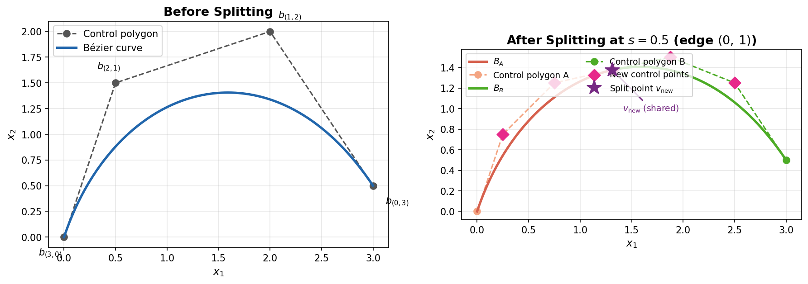
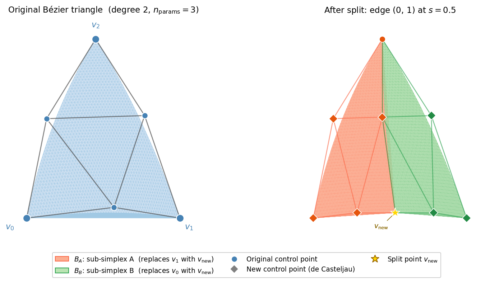
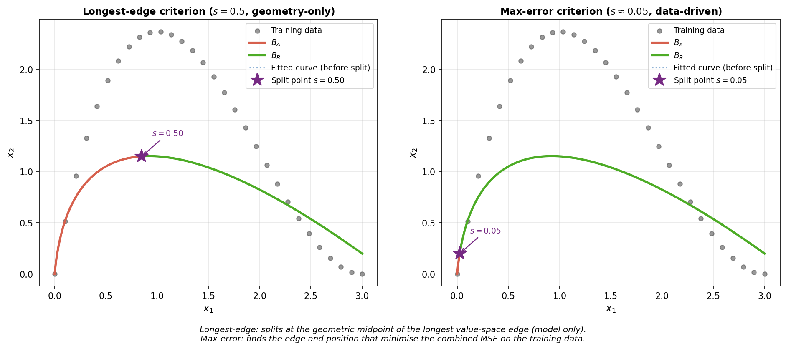
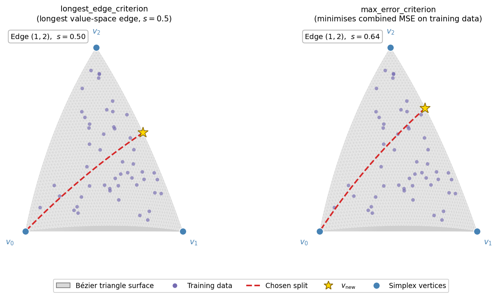

Bézier Simplex Splitting
The torch_bsf.splitting module provides functions to subdivide a fitted
Bézier simplex into two sub-simplices that together cover the entire original
parameter domain. Splitting is useful whenever a single global Bézier simplex
does not capture all the local features of a manifold — by recursively splitting
the problematic region you can achieve higher accuracy without increasing the
polynomial degree.
import torch
import torch_bsf
from torch_bsf.splitting import split, split_by_criterion, longest_edge_criterion
# Fit an initial model
params = torch.tensor([[1.0, 0.0], [0.5, 0.5], [0.0, 1.0]])
values = torch.tensor([[0.0], [1.0], [0.0]])
bs = torch_bsf.fit(
params=params,
values=values,
degree=2,
max_epochs=200,
enable_progress_bar=False,
logger=False,
enable_checkpointing=False,
)
# Split along the longest edge in value space
bs_A, bs_B = split_by_criterion(bs, longest_edge_criterion)
How Splitting Works
Given a Bézier simplex \(B\) of degree \(n\) over a simplex parameter domain with vertices \(v_0, \ldots, v_{m-1}\), splitting along edge \((i, j)\) at position \(s \in (0, 1)\) inserts a new vertex
and produces two sub-simplices:
bs_A — replaces vertex \(j\) with \(v_\mathrm{new}\). It covers the sub-domain \(\{t : t_j / (t_i + t_j) \le s\}\).
bs_B — replaces vertex \(i\) with \(v_\mathrm{new}\). It covers the sub-domain \(\{t : t_j / (t_i + t_j) \ge s\}\).
Both sub-simplices have the same degree and number of parameters as the original and together reproduce it exactly: for any point \(t\) in the original domain, evaluating the appropriate sub-simplex at its local coordinates gives the same value as evaluating the original.
{kind=link}

Fig. 8 Left – A degree-3 Bézier curve (n_params=2) with its four control points (circles) and control polygon (dashed). Right – After splitting at \(s=0.5\): sub-simplex \(B_A\) (red) covers the first half and sub-simplex \(B_B\) (green) covers the second half. Diamond markers highlight the control points that are newly computed by the de Casteljau algorithm; the star marks the shared split point \(v_\mathrm{new}\).
The control points of the two sub-simplices are computed using the de Casteljau algorithm applied along the chosen edge direction. At each step \(r = 1, \ldots, n\):
Rows with \(\alpha_j = r\) are saved as control points of bs_A. An analogous recursion with the roles of \(i\) and \(j\) swapped gives the control points of bs_B.
{kind=link}

Fig. 9 Left – A degree-2 Bézier triangle (n_params=3) with its six control points (circles) and control net. Right – After splitting edge \((0,1)\) at \(s=0.5\): sub-simplex \(B_A\) (orange, replaces \(v_1\) with \(v_\mathrm{new}\)) and \(B_B\) (green, replaces \(v_0\) with \(v_\mathrm{new}\)). Diamond markers highlight control points that are newly computed by the de Casteljau algorithm; the star marks the shared split point \(v_\mathrm{new}\).
Splitting a Specific Edge
Use split() when you know which edge to split and
where:
from torch_bsf.splitting import split
# Split edge (0, 1) of a Bézier curve at the midpoint
bs_A, bs_B = split(bs, i=0, j=1, s=0.5)
# Evaluate each sub-simplex on a fine grid in its local coordinates
from torch_bsf.sampling import simplex_grid
u_fine = simplex_grid(n_params=2, degree=20).float()
pred_A = bs_A(u_fine)
pred_B = bs_B(u_fine)
The s parameter controls where the new vertex is placed on the edge:
s = 0.5(default) — midpoint split.s < 0.5— the new vertex is closer to \(v_i\); bs_A covers a smaller sub-domain.s > 0.5— the new vertex is closer to \(v_j\); bs_B covers a smaller sub-domain.
Re-parameterizing Data Points
After splitting, existing data points need to be mapped to the local
barycentric coordinates of the sub-simplex they belong to.
reparametrize() performs this conversion:
from torch_bsf.splitting import reparametrize
# Original parameter vectors, shape (N, n_params)
t = params # e.g. from your training dataset
# Map to sub-simplex A
u_A, mask_A = reparametrize(t, i=0, j=1, s=0.5, subsimplex="A")
# u_A[mask_A] are the local coordinates of the points in sub-simplex A
# Map to sub-simplex B
u_B, mask_B = reparametrize(t, i=0, j=1, s=0.5, subsimplex="B")
The returned mask is a boolean tensor indicating which input points belong
to the requested sub-simplex. Points where \(t_i = t_j = 0\) lie on a
shared boundary and appear in both masks.
Note
The local barycentric coordinates u returned by
reparametrize() sum to 1 by construction, so
they can be passed directly to __call__().
Choosing a Split Automatically
Rather than specifying (i, j, s) by hand, you can pass a
SplitCriterion to
split_by_criterion(). The criterion inspects the
fitted model (and optionally the data) and returns the best (i, j, s)
triple.
Two built-in criteria are provided.
Longest-Edge Criterion
longest_edge_criterion() selects the edge with the
greatest distance in value space and splits at the given parameter s
(default s = 0.5, the midpoint). When used directly as a
SplitCriterion it applies the default midpoint
split; to use a different s value, wrap it with
functools.partial():
This criterion requires only the fitted model and is very fast. It works well when the manifold is elongated along a single direction.
import functools
from torch_bsf.splitting import longest_edge_criterion, split_by_criterion
# Default: split the longest edge at its midpoint (s=0.5)
bs_A, bs_B = split_by_criterion(bs, longest_edge_criterion)
# Custom split position: split the longest edge at the one-third mark
criterion_third = functools.partial(longest_edge_criterion, s=1.0 / 3.0)
bs_A, bs_B = split_by_criterion(bs, criterion_third)
You can also call the criterion directly to inspect which edge it selects:
i, j, s = longest_edge_criterion(bs)
print(f"Splitting edge ({i}, {j}) at s={s}")
Maximum-Error Criterion
max_error_criterion() finds the edge and split
position that minimizes the combined mean-squared error over the training data:
A grid search over candidate split positions in \((0, 1)\) is performed for every edge. This criterion is data-driven and typically produces a better split than the longest-edge criterion, at the cost of additional computation.
from torch_bsf.splitting import max_error_criterion, split_by_criterion
# Build the criterion (binds the training data)
criterion = max_error_criterion(params, values, grid_size=10)
# Split the model using the data-driven criterion
bs_A, bs_B = split_by_criterion(bs, criterion)
The grid_size parameter controls how many candidate s values are
evaluated per edge. Larger values give a finer search at the cost of more
forward passes through the model.
{kind=link}

Fig. 10 Comparison of the two built-in split criteria on the same degree-2 Bézier
curve (dotted) fitted to training data (grey dots). Left –
longest_edge_criterion splits at the geometric midpoint of the longest
value-space edge (\(s=0.5\)), ignoring the data distribution.
Right – max_error_criterion finds the edge and position that
minimise the combined MSE on the training data, here choosing a split
position closer to where the fitted curve deviates most from the data.
{kind=link}

Fig. 11 Comparison of the two built-in split criteria on a degree-2 Bézier
triangle (\(n_\mathrm{params}=3\)) with training data (purple dots).
Left – longest_edge_criterion selects the longest value-space edge
and splits at \(s=0.5\). Right – max_error_criterion selects
the edge and split position that minimise the combined MSE on the training
data; the chosen edge and \(s\) value may differ from the geometric
midpoint. The dashed line shows the split and the star marks
\(v_\mathrm{new}\) in both panels.
Custom Criteria
A SplitCriterion is any callable with the
signature (bs: BezierSimplex) -> tuple[int, int, float]. You can write
your own criterion and pass it to split_by_criterion():
from torch_bsf import BezierSimplex
from torch_bsf.splitting import split_by_criterion
def my_criterion(bs: BezierSimplex) -> tuple[int, int, float]:
# Always split the first edge at the one-third point
return 0, 1, 1.0 / 3.0
bs_A, bs_B = split_by_criterion(bs, my_criterion)
Iterative Refinement
A common workflow is to fit an initial model and then refine it by repeatedly splitting the sub-simplex with the largest approximation error. The example below demonstrates one round of such refinement:
import torch
import torch_bsf
from torch_bsf.splitting import (
max_error_criterion,
reparametrize,
split_by_criterion,
)
# ── 1. Initial data and fit ────────────────────────────────────────────────
params = torch.tensor([
[1.0, 0.0, 0.0],
[0.0, 1.0, 0.0],
[0.0, 0.0, 1.0],
[0.5, 0.5, 0.0],
[0.5, 0.0, 0.5],
[0.0, 0.5, 0.5],
])
values = torch.stack([p[0:1] * p[1:2] for p in params]) # nonlinear target
bs = torch_bsf.fit(
params=params,
values=values,
degree=2,
max_epochs=500,
enable_progress_bar=False,
logger=False,
enable_checkpointing=False,
)
# ── 2. Split using the data-driven criterion ───────────────────────────────
criterion = max_error_criterion(params, values, grid_size=10)
bs_A, bs_B = split_by_criterion(bs, criterion)
i, j, s = criterion(bs) # retrieve the chosen (i, j, s) for reparametrization
# ── 3. Reparametrize the data and re-fit each sub-simplex ─────────────────
u_A, mask_A = reparametrize(params, i, j, s, subsimplex="A")
u_B, mask_B = reparametrize(params, i, j, s, subsimplex="B")
if mask_A.any():
bs_A_refined = torch_bsf.fit(
params=u_A[mask_A],
values=values[mask_A],
degree=2,
max_epochs=500,
enable_progress_bar=False,
logger=False,
enable_checkpointing=False,
)
if mask_B.any():
bs_B_refined = torch_bsf.fit(
params=u_B[mask_B],
values=values[mask_B],
degree=2,
max_epochs=500,
enable_progress_bar=False,
logger=False,
enable_checkpointing=False,
)
API Reference
See the following public torch_bsf entries in the API Documentation for the full parameter reference: